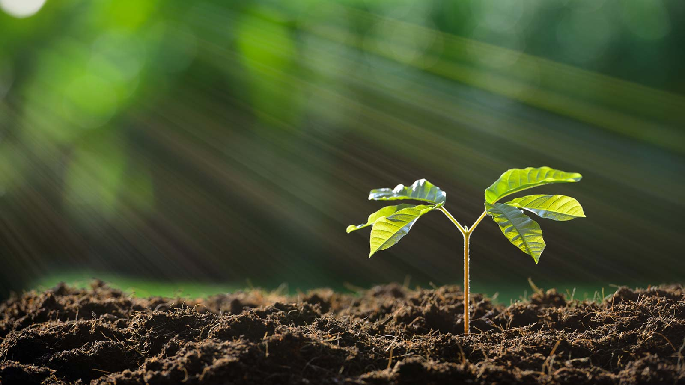
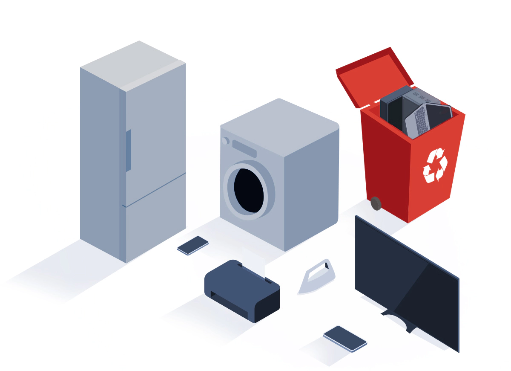
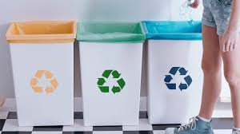
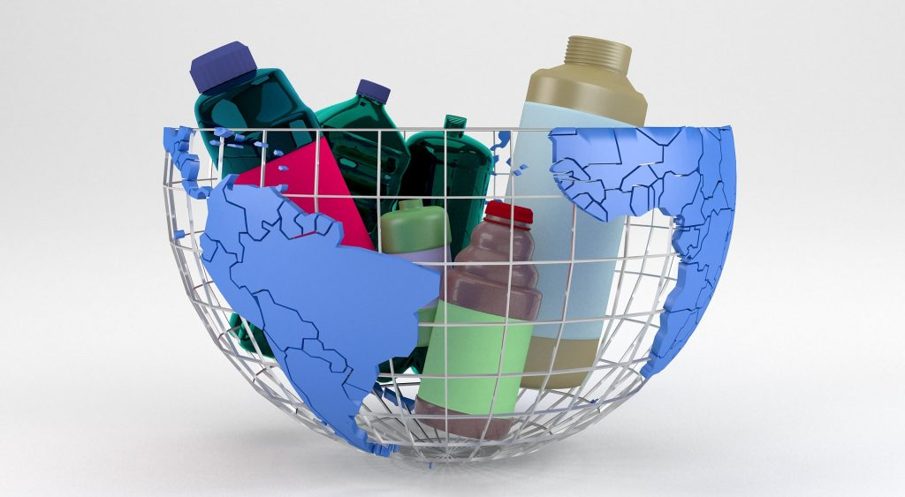

Recykling -jedna z metod ochrony środowiska naturalnego.
Jej celem jest ograniczenie zużycia surowców naturalnych oraz zmniejszenie ilości odpadów.
Recykling obejmuje odzyskiwanie surowców z produktów odpadowych i wykorzystywanie ich do produkcji nowych, poszukiwanych towarów.
Recykling przynosi wiele korzyści, wśród których znajdują się:
Zmniejszenie zużycia energii, a co za tym idzie –
redukcja wydatków. Bezpłatne pozbycie się niepotrzebnych
odpadów z gospodarstw domowych
Zbieranie osobno papieru, szkła, tworzyw sztucznych wraz z metalem,
a także oddzielanie odpadów biodegradowalnych
pozwala uzyskać najbardziej pełnowartościowe
surowce do ponownego przetworzenia.